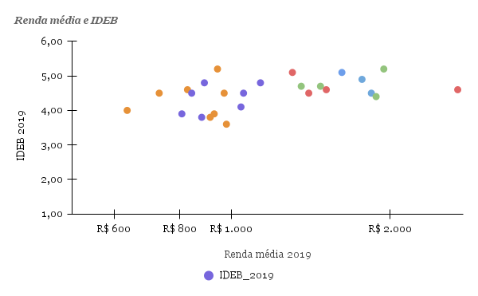

Análise da relação entre renda média e o IDEB nos anos finais do ensino fundamental (2019)
Nessa pesquisa, eu analisei os dados referentes a renda média e o IDEB por estado, para saber com certeza se os fatores estão relacionados. Os dados usados são do ano de 2019 do INEP e IBGE.
IDEB por estado (anos finais, 2019)

O grafico em formato de barras, representa um comparativo entre o IDEB anual e os estados brasileiros.
Relação entre renda média estadual e IDEB
Cada ponto representa um estado.
Contexto da Análise
Dados do IDEB (INEP) e da renda média domiciliar per capita (IBGE – PNAD Contínua) referentes a 2019.
Achados Preliminares
Há uma tendência positiva entre renda média estadual e desempenho no IDEB, mas a relação não é exata, uma alta renda média não significa um alto IDEB anual.
Observações & Limitações
Podemos observar que, embora os estados com maior renda tenham um IDEB alto, os estados com renda baixa também possuem um Alto IDEB, como o Ceará, que ocupa a segunda posição no ranking de IDEB.
Entretando, também observamos que o Distrito federal possui a maior renda per capita e mesmo assim fica em 11 posição, com um IDEB de 4,6.